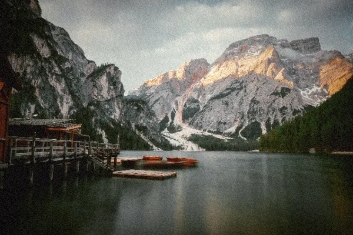
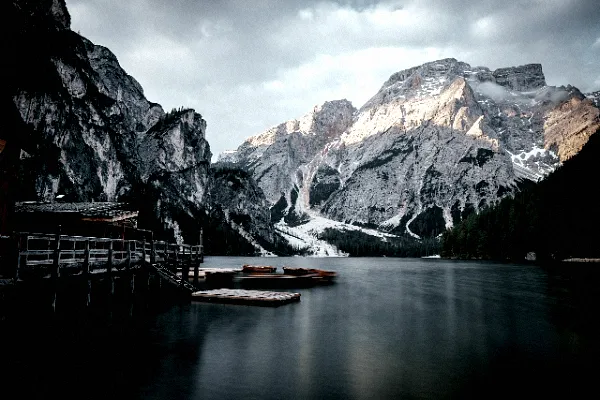
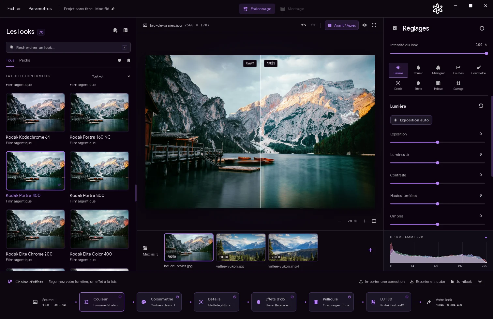
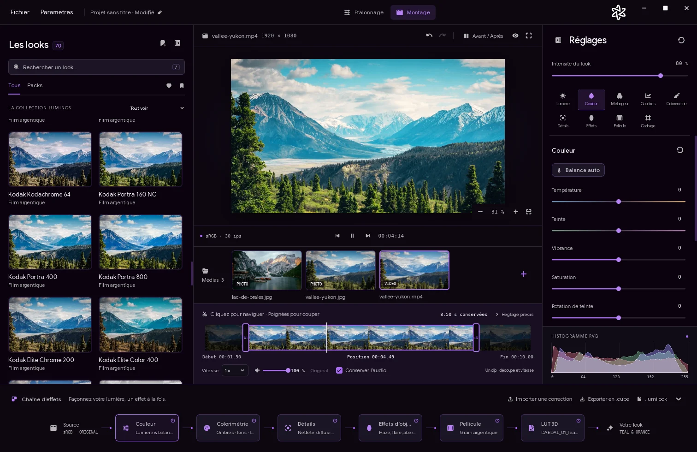
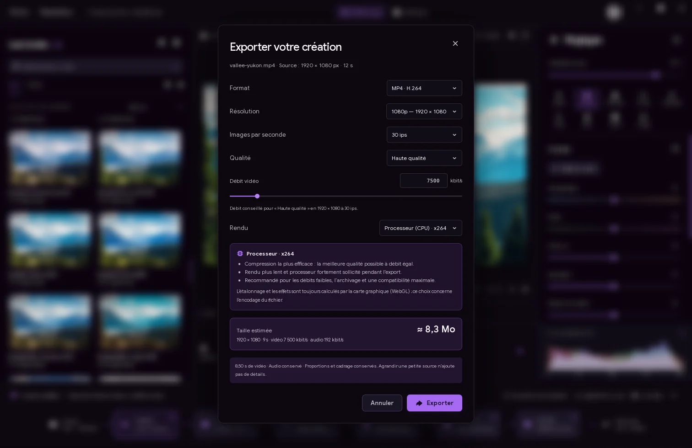
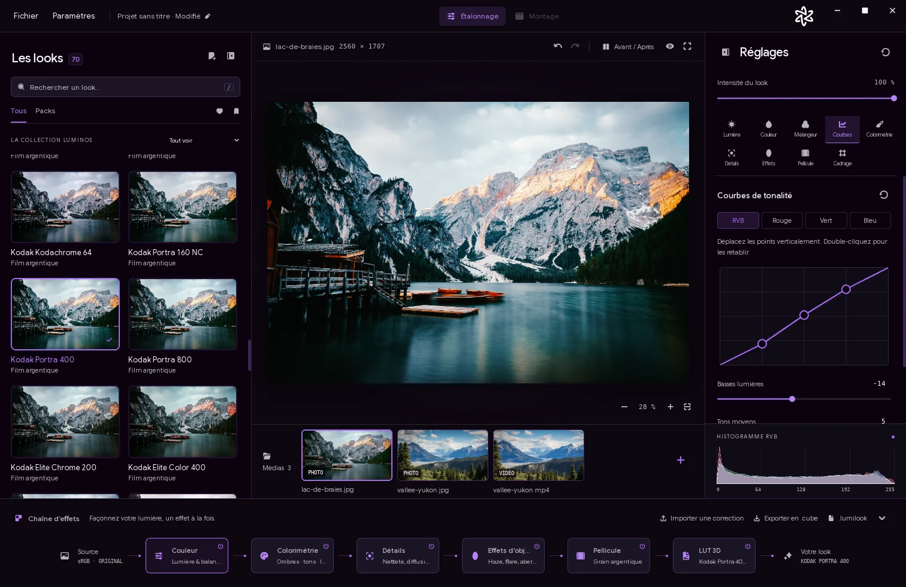
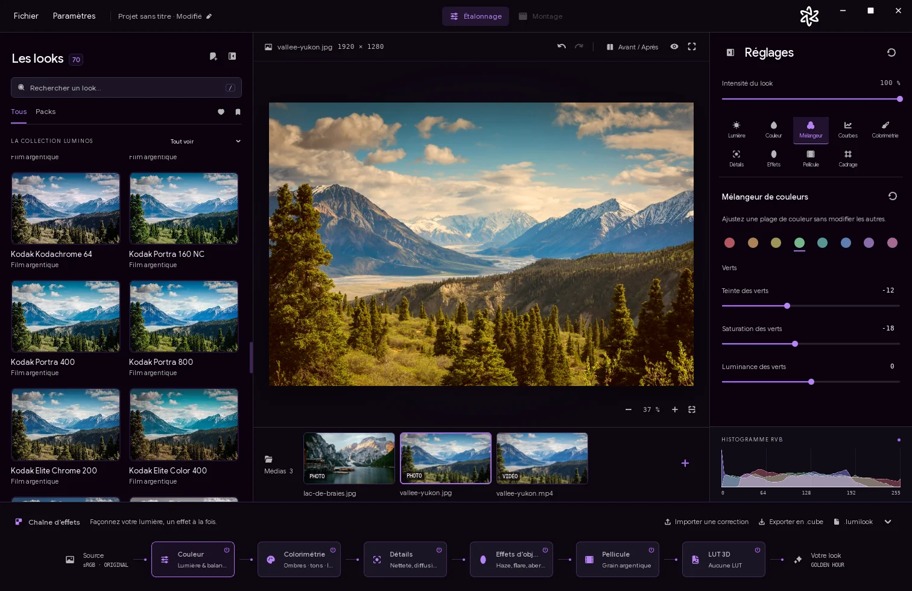
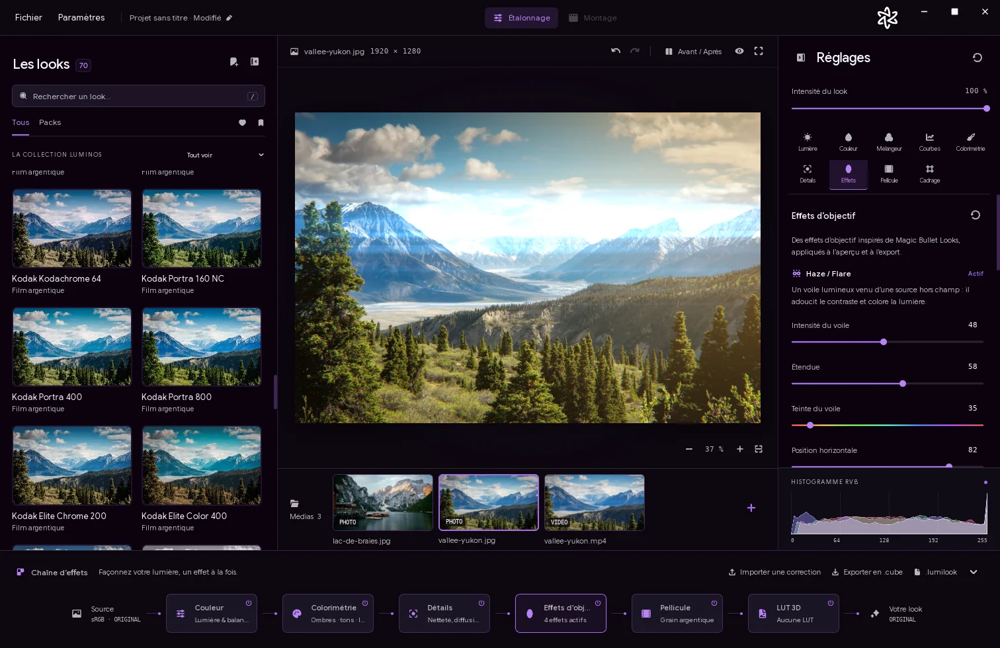
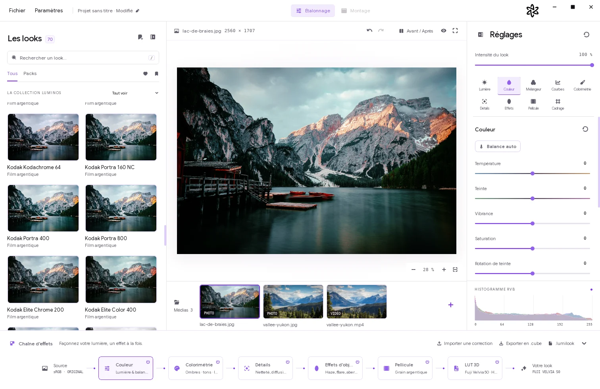
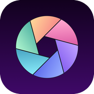

Étalonnez vos photos et vidéos.
Donnez une ambiance de cinéma ou de pellicule à vos images avec 70 looks, des effets d’objectif et des réglages précis. Gratuit, sans compte.
Windows 10 et 11 · 38 Mo · Existe aussi pour macOS et Linux
- 70 looks, dont 24 pellicules
- Gratuit, jusqu’à l’export 4K
- Vos médias restent sur votre ordinateur
- Fonctionne hors connexion
Essayez un look sur votre photo ou votre vidéo
Le moteur couleur de LumiLooks tourne ici, dans votre navigateur, sur une photo ou une vidéo. Votre fichier n’est envoyé nulle part.
Les looks
8 sur 70Déposez une photo ou une vidéo iciou importez-la depuis la barre d’outils. JPG, PNG, WebP, MP4 ou WebM.
Golden hourCinéma
14 looks sur la même photo
Un extrait des 70 looks : pellicules Kodak, Fuji et Ilford, looks de cinéma et créations Luminos.
- Kodak Portra 400Pellicule couleur
- Fuji Velvia 50Diapositive saturée
- Teal & orangeDAEDAL Cinematic
- Ilford HP5 Plus 400Noir et blanc
- Golden hourCinéma
- Kodak Kodachrome 64Diapositive

Super 8Pellicule délavée- Nordic blueLumière froide
- Chrome 200Couleurs franches
- Midnight violetSignature Luminos
- DunePalette minérale
- Rose quartzSignature Luminos
- Forest moodVerts profonds

Silver bypassNoirs denses
Photo, vidéo, export
LumiLooks 2.0 au travail : étalonnez une photo, montez une vidéo, puis exportez-la au débit de votre choix. Cliquez sur une capture pour l’agrandir.


AgrandirÉtalonnez une photo
Importez votre image, choisissez un des 70 looks, ici Kodak Portra 400, puis comparez l’avant et l’après d’un glissement. Dosez l’intensité et affinez chaque réglage.


AgrandirMontez votre vidéo
Passez en Montage pour couper le clip, régler la vitesse et le volume. Le look et les réglages s’appliquent à chaque image.


AgrandirExportez au bon débit
MP4, WebM, MOV, AVI ou WMV, jusqu’en 4K. Réglez le débit en kbit/s, voyez la taille estimée du fichier et choisissez l’encodage processeur ou carte graphique.
Tout pour étalonner, rien à installer en plus
Un seul logiciel pour vos photos et vos vidéos, du premier look jusqu’au fichier final. Tout est calculé sur votre ordinateur.
70 looks prêts à l’emploi
24 pellicules Kodak, Fuji, Ilford et Agfa, des looks de cinéma et des créations Luminos. Intensité réglable, favoris et looks personnels.
Effets d’objectif
Voile lumineux, flare anamorphique, aberration chromatique, distorsion et diffusion optique, calculés en temps réel.
Réglages précis
Lumière, balance des blancs, mélangeur HSL sur huit plages, courbes RVB, roues de colorimétrie, grain et netteté.
Vidéo et montage
Lecture image par image, découpe, vitesse et volume. Le même étalonnage s’applique à chaque image du clip.
Exports sur mesure
Photos en PNG, JPG ou PDF à la taille voulue. Vidéos en MP4, WebM, MOV, AVI ou WMV jusqu’en 4K, au débit choisi en kbit/s.
Processeur ou carte graphique
Encodez au processeur pour la meilleure compression, ou avec NVIDIA, AMD, Intel ou Apple pour aller plus vite. La taille du fichier est estimée avant l’export.
Corrections réutilisables
Exportez votre correction en .cube : c’est une LUT pour vos autres logiciels, et LumiLooks y retrouve tous vos réglages.
Plein écran et avant/après
Jugez votre image en plein écran, comparez l’original d’un glissement et revenez en arrière à tout moment.
L’atelier en images
Les outils de précision : courbes, couleurs, effets d’objectif et thème clair ou sombre. Cliquez sur une capture pour l’agrandir.


AgrandirRéglez la lumière et les courbes
Ajustez l’exposition, les hautes lumières et les ombres. Modifiez la courbe globale ou chacun des canaux rouge, vert et bleu.


AgrandirIsolez la couleur à travailler
Affinez la teinte, la saturation et la luminance de huit plages de couleur. Travaillez aussi la balance des blancs et les roues de colorimétrie.


AgrandirAjoutez des effets d’objectif
Voile lumineux (haze), flare anamorphique, aberration chromatique, distorsion d’objectif et diffusion optique, avec netteté, grain et vignettage.


AgrandirTravaillez en clair ou en sombre
Changez de thème depuis Paramètres. Exportez votre correction en .cube : réimportée dans LumiLooks, elle restaure tous vos réglages.
Le film de présentation
Voyez une image changer d’ambiance en quelques secondes.
Télécharger LumiLooks
Gratuit et sans abonnement. Choisissez la version de votre ordinateur.
Version 2.0.0
Windows
Votre système
- Installateur Windows 10 et 11 Télécharger
macOS
Votre système
- Puce Apple Télécharger
- Processeur Intel Télécharger
macOS 13 ou plus récent. Vérifiez votre puce dans « À propos de ce Mac ». Après extraction, glissez LumiLooks.app dans Applications. Ces préversions sont signées ad hoc ; la notarisation Apple reste à faire.
Linux
Votre système
- Debian et Ubuntu Télécharger
- AppImage Télécharger
Pour l’AppImage, autorisez l’exécution du fichier dans ses propriétés.
Questions fréquentes
Une autre question ou un problème ? Écrivez-nous sur GitHub.
LumiLooks est vraiment gratuit ?
Oui. Les 70 looks, les réglages photo et vidéo et les exports sont inclus. Aucun compte ni abonnement n’est nécessaire, et aucun filigrane n’est ajouté.
Mes photos et vidéos sont-elles envoyées en ligne ?
Non. L’application travaille directement sur votre ordinateur. Vos médias restent en local et l’étalonnage fonctionne sans connexion Internet. L’essai sur cette page fonctionne aussi dans votre navigateur, sans envoi.
Faut-il déjà savoir étalonner une image ?
Commencez par importer une photo ou une vidéo, choisissez un look, puis ajustez son intensité. Comparez le résultat avec l’original grâce au mode avant/après. Les courbes et le mélangeur de couleurs servent ensuite aux réglages plus fins.
Quels formats puis-je exporter ?
Pour les photos : JPG, JPEG, PNG et PDF, à la largeur et à la hauteur de votre choix. Pour les vidéos : MP4, WebM, MOV, AVI et WMV, en 720p, 1080p ou 4K, avec un débit réglable en kbit/s et la taille du fichier estimée avant l’export. Vous pouvez aussi importer vos propres LUTs au format .cube.
Puis-je réutiliser mes réglages sur une autre image ?
Oui. Exportez votre correction au format .cube : réimportée dans LumiLooks, elle restaure tous vos réglages, effets compris. Dans un autre logiciel, elle sert de LUT 3D classique. Le format .lumilook garde aussi tous les réglages.
Quelle version choisir sur Mac ?
Ouvrez « À propos de ce Mac ». Si une puce Apple est indiquée, choisissez Apple Silicon ; sinon, prenez la version Intel. macOS 13 ou plus récent est nécessaire. Ces versions sont encore en préversion et ne sont pas notarisées par Apple.

Donnez une couleur à vos idées.
LumiLooks 2.0 est gratuit, sans compte ni filigrane, et fonctionne hors connexion.
Version 2.0.0 · Windows 10 et 11, macOS 13 et plus, Debian, Ubuntu et AppImage